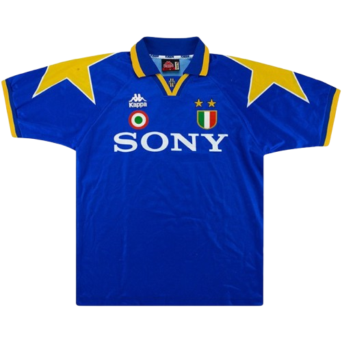
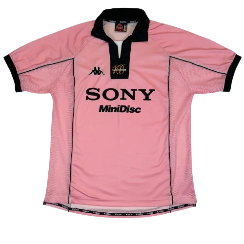
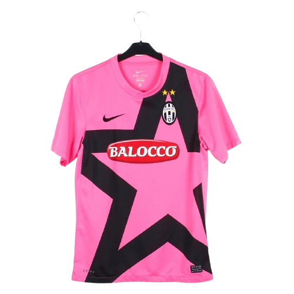
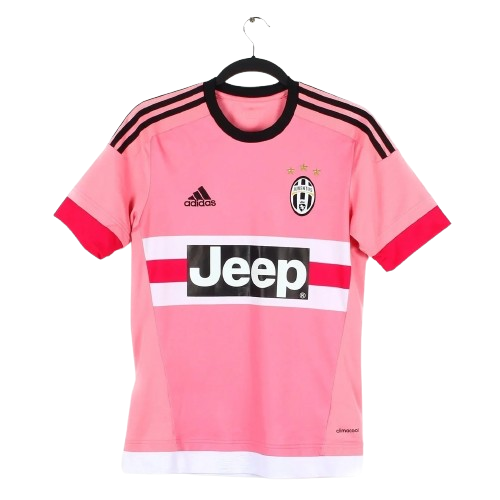

La maglia blu della Juventus del 1995 è una divisa storica del club. Indossata da grandi campioni come Del Piero, Baggio e Vialli, rappresenta una stagione di grandi successi con la vittoria del campionato italiano 1994-1995 e della Coppa Italia. Il suo colore blu è diventato un simbolo di eleganza e di un’epoca vincente.

La maglia rosa della Juventus del 1997 è una divisa storica che richiama le origini del club, fondato nel 1897. Indossata durante una stagione di grandi successi con campioni come Del Piero, Zidane e Vieri, rappresenta l’eleganza e la storia bianconera. Il suo colore rosa è diventato un simbolo delle radici della Juventus.

La maglia rosa della Juventus del 2011 è una divisa storica che celebra il ritorno alle origini del club. Indossata nella prima stagione al nuovo Juventus Stadium, con campioni come Del Piero, Buffon e Pirlo, rappresenta l’inizio di una nuova era vincente. Il suo colore rosa, ispirato alla prima maglia della Juventus, è diventato un simbolo di tradizione e rinnovamento.

La maglia rosa della Juventus del 2015 è una divisa speciale che richiama la storia e le origini del club. Indossata da campioni come Buffon, Pogba, Dybala e Marchisio, rappresenta una stagione di grandi emozioni con la vittoria del campionato italiano e della Coppa Italia. Il suo colore rosa è un omaggio alla prima maglia della Juventus e alla tradizione bianconera.
